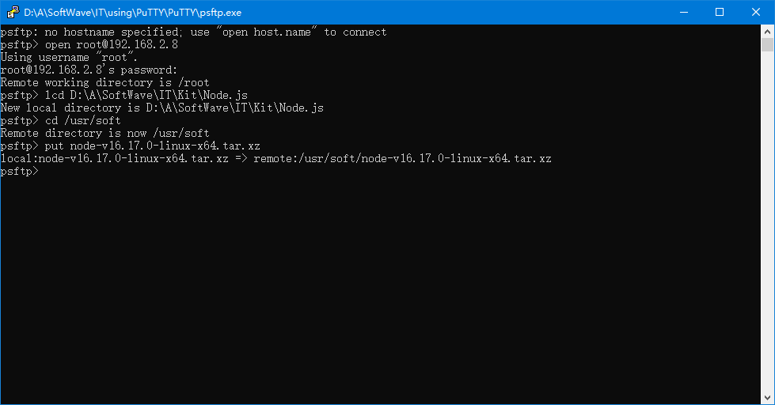
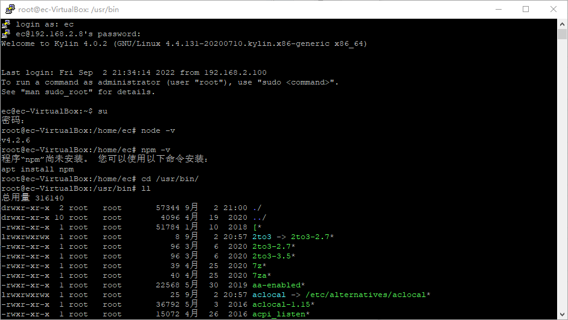
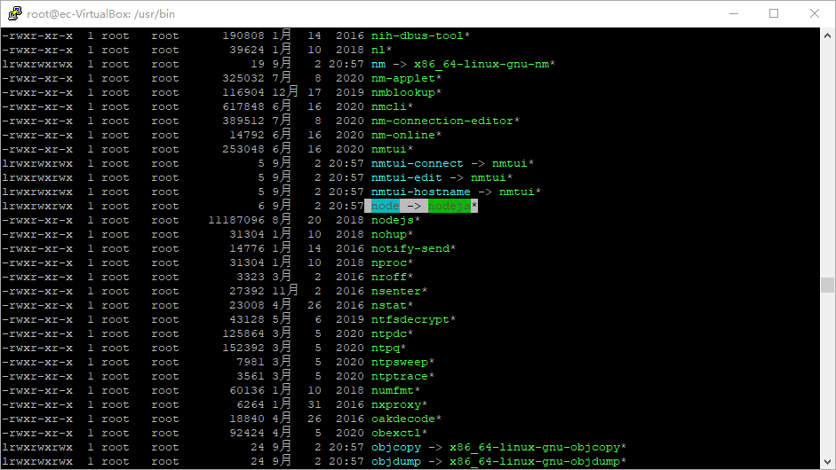
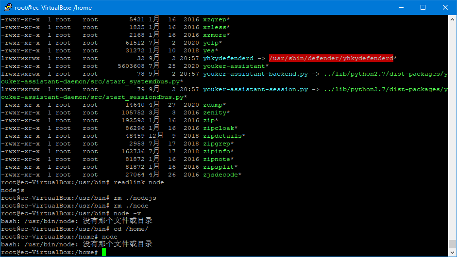
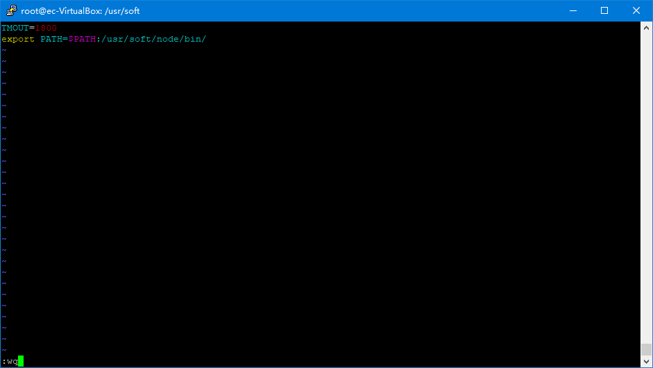
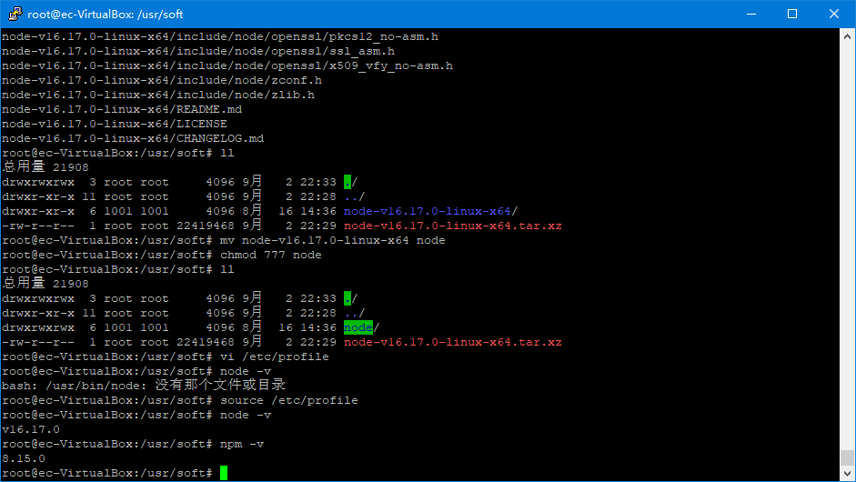
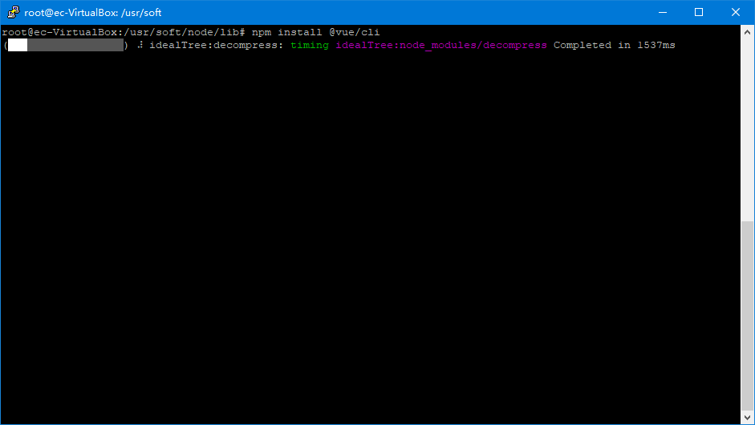
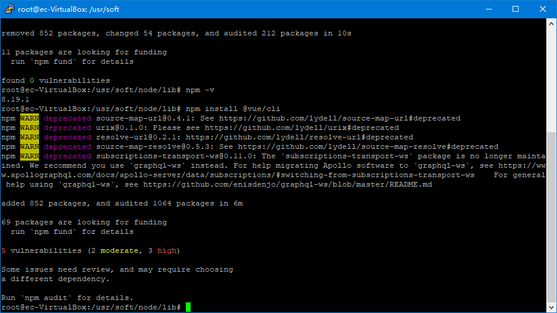
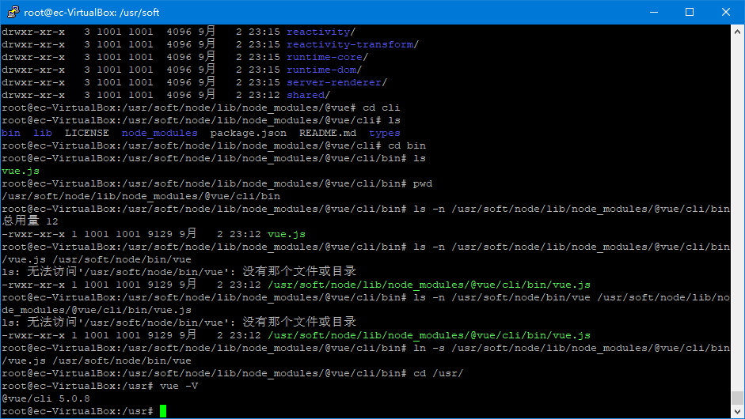

在Kylin OS上安装VUE_CLI环境¶
author:entrycoder
create at : 2022-08-15 23:36 GMT +8
update at : 2022-09-03 21:03 GMT +8
参照内容
单位网络管理员讲解
https://blog.csdn.net/kingchen2010/article/details/120473243 https://www.php.cn/vuejs/481497.html
〇、前提说明¶
1.本次实操使用root用户，避免各类权限问题
如果使用其他用户操作遇到了权限问题，可以在命令前加sudo，意为暂时使用系统管理员身份执行命令
如
$ sudo vi /etc/profile
一、包下载¶
首先应当下载linux版本的node包(https://nodejs.org/en/download/),此处以LTS版本的node-v16.17.0-linux-x64.tar.xz为例进行说明
注意要下载linux版本的包，可以下载至windows电脑，之后传输至linux电脑。也可以直接在联网的linux电脑中下载
本次测试选择下载至windows电脑中，之后使用工具传输至linux的方式进行
传输方式如图 
二、检查系统原本环境¶
1.在正式配置下载的node之前，应当先检查本系统的环境，确认不存在其他版本的node以及npm，以免冲突
检查node版本，使用
$ node -v
检查npm版本，使用
$ npm -v

此处以root用户登录，因此命令分别是
# node -v
# npm -v
2.切换至/usr/bin路径下
$ cd /usr/bin/
$ ll
4.找到node命令对应的文件，如果有链接，将链接一并删除 
删除命令
$ rm ./node
$ rm ./nodejs
删除完成后，再次确认node版本，此时回提示未找到node，说明node已经被删除 
三、准备新的node环境¶
1.为避免权限问题造成无法识别可执行文件，先给文件夹赋予权限
$ chmod 777 /usr/soft
2.切换至/usr/soft文件夹下， 使用命令
$ ll
3.根据文件名*.xz判断，此文件未使用gzip压缩，仅打包
因此使用
$ tar -xvf node-v16.17.0-linux-x64.tar.xz
4.解压后的文件夹名称过长，不方便后续填写，因此进行重命名
$ mv node-v16.17.0-linux-x64 node
5.同样给当前文件夹下的node文件夹赋予权限
$ chmod 777 node
6.将当前文件夹下的./node/bin添加至环境变量中，方便用户使用
$ vi /etc/profile
之后输入
export PATH=$PATH:/usr/soft/node/bin/
输出(export)环境变量(PATH)，内容是(=)：原本的环境变量($PATH)，加上(:为分隔符，在windows操作系统的环境变量中使用;)新的路径(此处为/usr/soft/node/bin/)
按下ESC键退出输入模式
按下:wq这三个按键写入文件并退出

7.此时如果直接使用
$ node -v
使用
$ source /etc/profile
再次使用
$ node -v
$ npm -v

四、依赖包安装¶
1.为使用其他依赖包，可以通过
$ npm install [packageName]
默认安装至当前目录的node_modules目录下，因此切换至/usr/soft/node/lib/目录下进行安装
$ cd /usr/soft/node/lib/
因实际操作问题，此处先对npm版本进行了升级，命令同安装其他依赖包
$ npm install npm
如果依赖包长时间无法下载，或者提示网络问题，可以使用加速器，或者切换至国内镜像源进行下载安装。此次操作使用加速器进行下载
之后安装的包为@vue/cli，因此命令为
$ npm install @vue/cli

安装完成后可以看到修改或者添加了一些包(packages)  出现告警(WARN)暂时无需理会
2.此时如果/usr/soft/node/bin/目录下未多出一些其他可执行文件，有两种可能
(1)下载的包本身就不是可执行文件(可执行二进制文件)
(2)下载的包中包含的可执行文件未放在node/bin/目录下
对于情况(1)，项目中使用时引入js文件即可
对于情况(2)，可以将包依赖中的/bin目录下的可执行文件链接至/usr/soft/node/bin/目录下
此处以vue/cli为例
$ ln -s /usr/soft/node/lib/node_modules/@vue/cli/bin/vue.js /usr/soft/node/bin/vue
在/usr/soft/node/bin/目录下创建一个名为vue的链接，指向 /usr/soft/node/lib/node_modules/@vue/cli/bin/vue.js文件
因为/usr/soft/node/bin/已经添加至环境变量，因此系统可以直接识别vue命令 使用
$ vue -V

注意：链接的名称是自定义的(此处自定义为vue)
五、转移至其他kylin电脑¶
1.使用
$ tar -cvf /usr/soft/node node.tar.xz
2.将打包好的文件 node.tar.xz 传入其他kylin电脑中
3.参照前文进行环境的配置即可使用